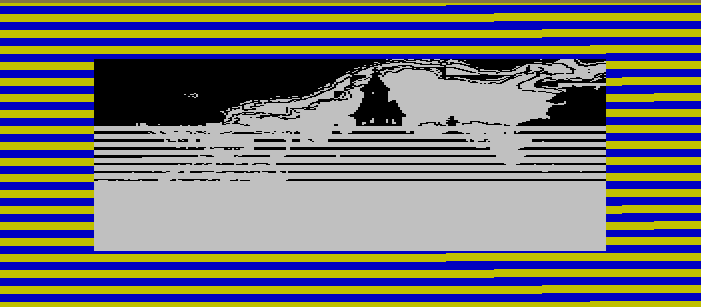

El Jardín de Cristal
Aventura narrativa para ZX Spectrum 128K. Una experiencia creada dentro del universo de aventuras de EladioTechnia.

Aventuras narrativas · Software · Experimentos
Cuando era pequeño, mi abuela me regaló un ZX Spectrum.
Por aquella época también recuerdo una cinta de música de Manowar. En una de sus canciones, una voz contaba la historia de un abuelo a su nieto.
Yo no entendía aquellas palabras en inglés.
Pero ocurría algo curioso.
Mientras la historia avanzaba, aparecían sonidos de truenos, caballos galopando y otros efectos que acompañaban aquello que la voz estaba contando.
Y yo alucinaba.
No necesitaba entender todas las palabras para imaginar lo que estaba sucediendo.
La historia estaba ocurriendo dentro de mi cabeza.
Han pasado unos cuarenta años.
Los audiolibros actuales siguen utilizando una idea parecida: alguien cuenta una historia y la voz, la música y los sonidos ayudan al oyente a imaginarla.
Nosotros queremos dar un paso más.
¿Y si además de leer y escuchar pudiéramos decidir?
¿Y si pudiéramos ver los lugares, escuchar la música, encontrarnos con personajes y escoger qué hacer a continuación?
De ahí nacen nuestras aventuras narrativas.
Son historias que se leen, se escuchan, se contemplan y, sobre todo, se deciden.
No queremos sustituir la imaginación del lector.
Queremos darle más herramientas para utilizarla.
Una novela puede contarte una historia.
Una novela interactiva puede preguntarte qué harías tú.
Bienvenido a EladioTechnia.
No vengas solamente a leer una historia.
Ven a descubrir qué ocurre cuando tú decides
cómo continúa.
Un espacio para descubrir, experimentar y disfrutar de los proyectos creados por Eladio Rey.
Aventura narrativa para ZX Spectrum 128K. Una experiencia creada dentro del universo de aventuras de EladioTechnia.
Aventura narrativa interactiva para navegador. Una historia en la que tus decisiones modifican el desarrollo de la experiencia.
▶ Jugar aventuraDemo pública · Parte 1
Pulsa sobre el emulador para darle el foco. En móvil o tablet puedes utilizar los controles táctiles.